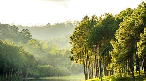

Nature - Blog
Nature, in the broadest sense, is the physical world or universe. "Nature" can refer to the phenomena of the physical world, and also to life in general. The study of nature is a large, if not the only, part of science. Although humans are part of nature, human activity is often understood as a separate category from other natural phenomena.
Water is a chemical substance that is composed of hydrogen and oxygen (H2O) and is vital for all known forms of life.[29] In typical usage, water refers only to its liquid form or state, but the substance also has a solid state, ice, and a gaseous state, water vapor, or steam. Water covers 71% of the Earth's surface.[30] On Earth, it is found mostly in oceans and other large bodies of water, with 1.6% of water below ground in aquifers and 0.001% in the air as vapor, clouds, and precipitation.[31][32] Oceans hold 97% of surface water, glaciers, and polar ice caps 2.4%, and other land surface water such as rivers, lakes, and ponds 0.6%. Additionally, a minute amount of the Earth's water is contained within biological bodies and manufactured products.
.jpg)
Within the various uses of the word today, "nature" often refers to geology and wildlife. Nature can refer to the general realm of living plants and animals, and in some cases to the processes associated with inanimate objects—the way that particular types of things exist and change of their own accord, such as the weather and geology of the Earth. It is often taken to mean the "natural environment" or wilderness—wild animals, rocks, forest, and in general those things that have not been substantially altered by human intervention, or which persist despite human intervention. For example, manufactured objects and human interaction generally are not considered part of nature, unless qualified as, for example, "human nature" or "the whole of nature". This more traditional concept of natural things that can still be found today implies a distinction between the natural and the artificial, with the artificial being understood as that which has been brought into being by a human consciousness or a human mind. Depending on the particular context, the term "natural" might also be distinguished from the unnatural or the supernatural.
Earth is the only planet known to support life, and its natural features are the subject of many fields of scientific research. Within the Solar System, it is third closest to the Sun; it is the largest terrestrial planet and the fifth largest overall. Its most prominent climatic features are its two large polar regions, two relatively narrow temperate zones, and a wide equatorial tropical to subtropical region.[7] Precipitation varies widely with location, from several metres of water per year to less than a millimetre. 71 percent of the Earth's surface is covered by salt-water oceans. The remainder consists of continents and islands, with most of the inhabited land in the Northern Hemisphere.
***